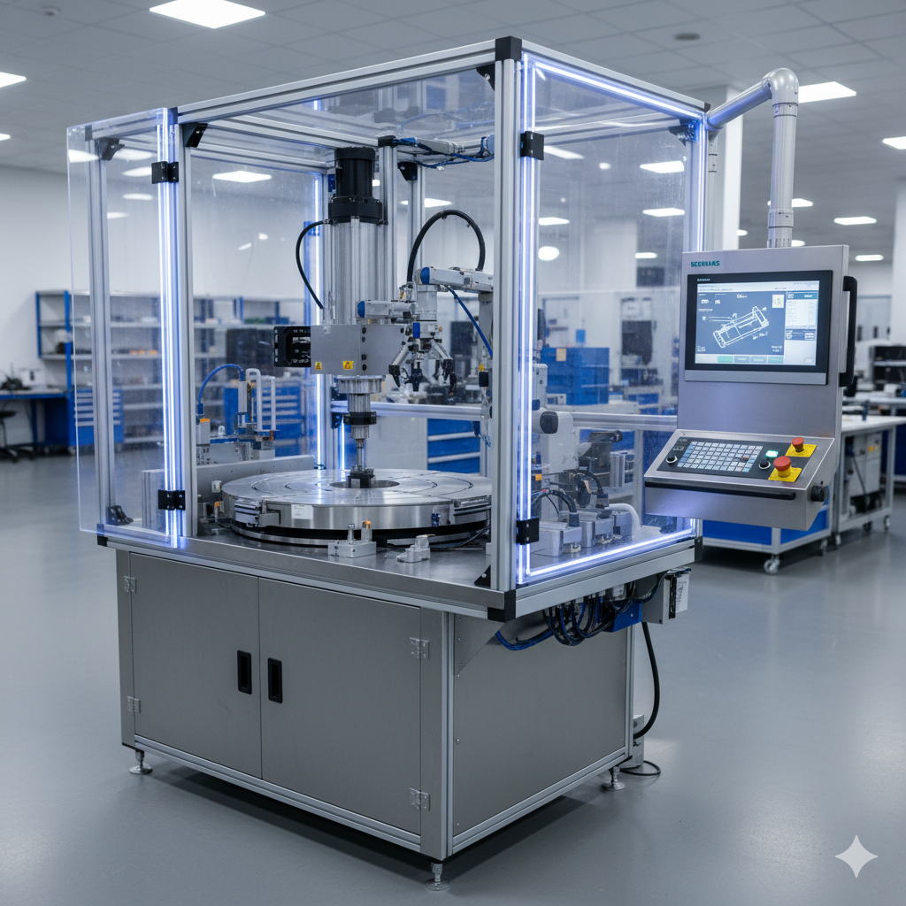

Precision Riveting Machine
High-accuracy riveting workstation for seat-belt components. Impact: ±25 µm · 98.5% FPY · <2 min changeover
I develop mechatronics systems that work in real industrial environments, under real constraints.
I’m a mechanical engineer who enjoys turning practical problems into reliable mechanical systems. Whether it’s a precision fixture, an automated station, or a subsystem for an autonomous robot, I like the point where an idea becomes something built, tested, and ready for real industrial use.
I’ve worked across prototyping labs, R&D teams, assembly lines, and automation classrooms. These experiences shaped how I design:
Today, I work at the intersection of mechanical design, automation, and systems engineering, building mechanisms and machines that deliver consistent performance in production.
For detailed case studies, download the full portfolio.
High-accuracy riveting workstation for seat-belt components. Impact: ±25 µm · 98.5% FPY · <2 min changeover
Design of mechanical subsystems and brushes. Impact: +45% cleaning efficiency · ~30% faster assembly
Line modernization with servo-driven systems. Impact: Cycle 12s → 6s · Operators 12 → 5
The full portfolio includes detailed case studies, drawings, automation workflows, and additional engineering projects.
Download Full PortfolioTrained students in automation, sensors, PLCs, actuators, and CAD, preparing them for industrial roles.
Designed IP65-rated subsystems and improved cleaning performance for autonomous robots.
Developed automated machines for automotive safety components and commissioning support.
Created parametric packaging models and optimized laser-cutting workflows.
Email: rushikeshabhale95@gmail.com LinkedIn: rushikesh-abhale